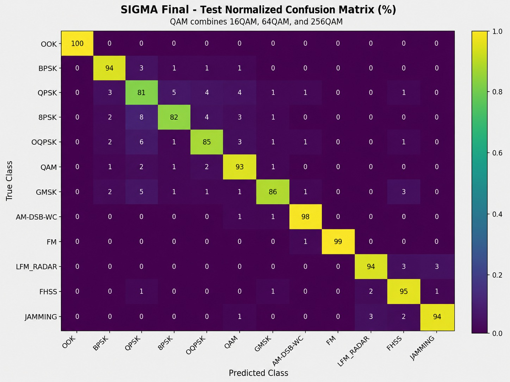

Acquire RF signals
Receive radio-frequency activity through a software-defined radio platform and obtain raw I/Q data for analysis.
From radio signals to intelligence. SIGMA combines software-defined radio, digital signal processing and deep learning to classify RF signal patterns across civilian, military and interference categories.
Explore the SystemView Signal ClassesProject SIGMA is an AI-driven signal intelligence system that captures radio-frequency signals, processes them using digital signal processing (DSP), and applies a CNN-based deep learning model to identify and classify signal types. The project aims to support signal analysis, spectrum awareness and monitoring.
Receive radio-frequency activity through a software-defined radio platform and obtain raw I/Q data for analysis.
Apply DSP techniques and transform signal data into useful representations for feature analysis.
Use CNN-based learning to distinguish signal classes and present classification results for monitoring.
The project flyer groups the target signals into three broad categories.
OOK, BPSK, QPSK, 8PSK, OQPSK, QAM, GMSK, AM-DSB-WC and FM.
LFM Radar and FHSS signal patterns, including continuous and burst examples shown in the project material.
Jamming signals, interference patterns and spectrum anomalies for RF environment awareness.
A five-stage processing pipeline connects RF reception with AI-assisted signal identification.
Receive RF activity using the SDR front end.
Process and prepare raw I/Q signal data.
Represent signal characteristics for model input.
Estimate the signal class using deep learning.
Display classification output for analysis.
Explore the architecture used by the 11-class modulation model. Move through the network from 1,024 complex I/Q samples to 11 modulation probabilities, including the residual shortcuts that help features flow through deeper layers.
Two real-valued channels represent the in-phase and quadrature samples.
Based on Sigma11LiteResNet1D from SIGMA's Developer page. Channel counts, strides, block order and skip connections reflect the supplied source code. Moving dots illustrate information flow, not actual trained weights, measured activations or prediction probabilities. The 11 outputs are combined into 9 displayed modulation groups elsewhere in SIGMA.
Software-defined radio used for RF signal reception and I/Q data capture.
Omnidirectional antenna specified in the project flyer for wide frequency coverage.
Used for signal processing, analysis and AI classification workflows.
Mean of the 12 class recall values on the normalized test confusion matrix.
This figure describes the shown matrix only; it is not a guarantee of performance on all signals or conditions.
The matrix compares true signal classes with predicted classes, showing correct classifications along the diagonal and misclassifications in off-diagonal cells.

Normalized test confusion matrix for 12 signal classes. Diagonal entries show recall percentages per true class; QAM combines 16QAM, 64QAM and 256QAM. Tap the image to view full resolution.
Supports the examination of real-world radio-frequency activity.
Helps interpret signal activity and identify interference patterns.
Provides a platform for further study in signal classification and RF monitoring.
Combines DSP and AI-assisted classification in one analysis workflow.
“Towards a smarter and safer radio frequency environment through intelligent signal classification.”